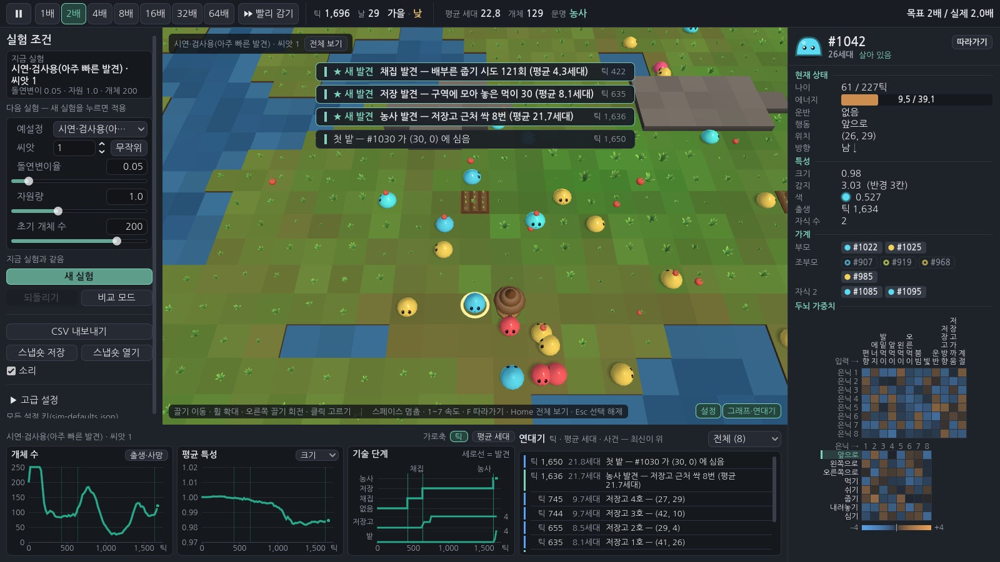
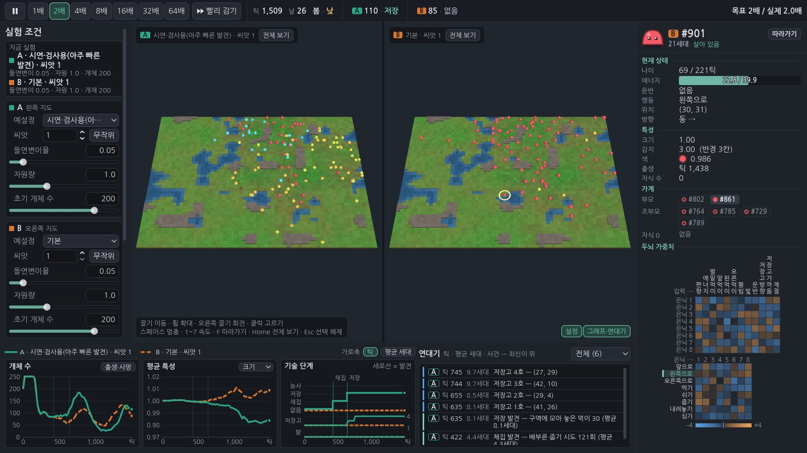
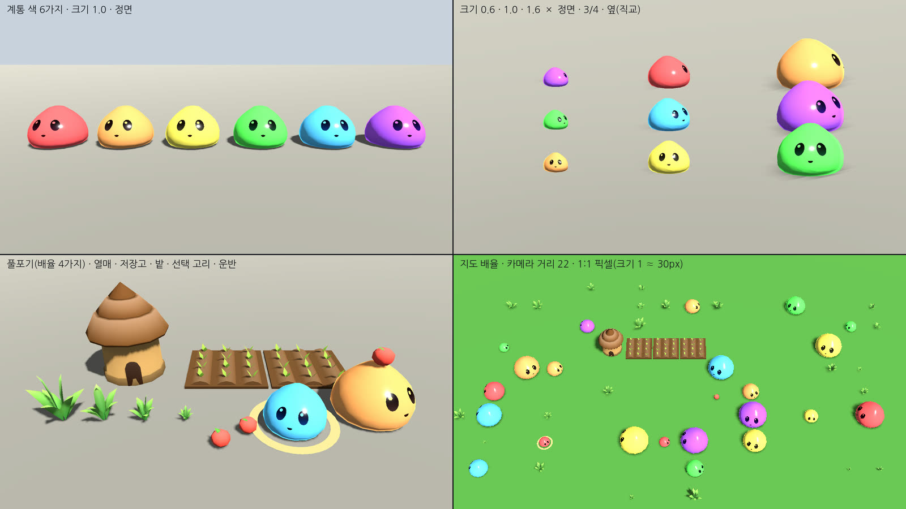
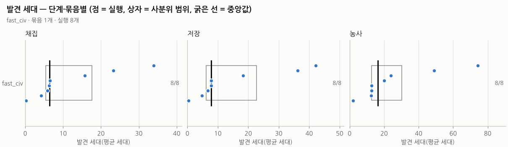
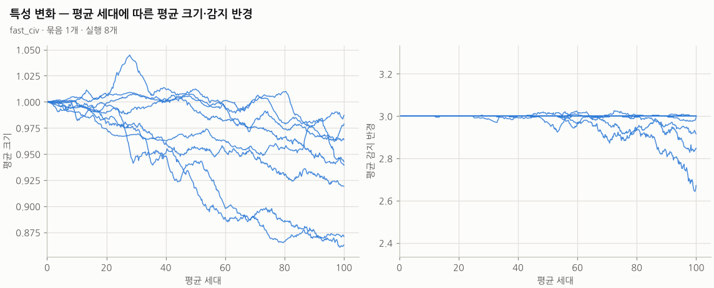

생태
먹고, 번식하고, 죽는다
64×48 격자 지도(풀밭·물·바위)는 씨앗(seed)으로 만듭니다. 식물은 비옥도 × 낮밤 × 계절 × 자원량만큼 자라고, 슬라임은 에너지와 수명이 있으며 성숙하면 가까운 짝과 번식합니다.
Project 02 · 인공생명 시뮬레이션
작은 신경망을 가진 슬라임들이 스스로 먹고 번식하며 세대를 거쳐 진화하고, 행동이 쌓이면 채집 → 저장 → 농사를 발견합니다. 사용자는 조작하지 않고 실험 조건을 정한 뒤 관찰하고 분석하는 연구용 시뮬레이션입니다. AI 코딩 에이전트(Claude Code)와 함께 바이브 코딩으로 이틀 동안 만들었습니다.
체험판은 PC 브라우저(WebGL2)용입니다. 브라우저에서는 데스크톱판보다 느려 높은 배속이 덜 나오며, 화면 오른쪽 위의 "실제 M배"가 그대로 보여 줍니다.
01
규칙은 단순하게, 결과는 관찰로. 모든 수치는 설정 파일 하나에서 읽습니다.
생태
64×48 격자 지도(풀밭·물·바위)는 씨앗(seed)으로 만듭니다. 식물은 비옥도 × 낮밤 × 계절 × 자원량만큼 자라고, 슬라임은 에너지와 수명이 있으며 성숙하면 가까운 짝과 번식합니다.
두뇌와 진화
슬라임마다 입력 12·은닉 8·출력 8 의 신경망(가중치 160개 + 크기·감지·색 유전자)이 있습니다. 역전파 없이, 번식할 때 부모의 가중치를 은닉 뉴런 단위로 섞고 돌연변이를 더해 세대가 바뀌며 진화합니다.
문명
아직 열리지 않은 행동(줍기·내려놓기·심기)도 고를 수 있고, 그 "시도"와 결과가 쌓여 임계를 넘으면 발견이 열립니다. 저장을 발견하면 저장고가, 농사를 발견하면 밭이 생깁니다.
같은 씨앗과 같은 설정이면 같은 역사가 나오도록(결정적 시뮬레이션) 시뮬레이션 코드는 사칙연산과 제곱근만 쓰고, 이를 자동 검사로 확인합니다. 실험실에서 내보낸 CSV 는 같은 조건의 헤드리스 실행 결과와 글자까지 같습니다.
02
조작하는 게임이 아니라 관찰하는 도구입니다. 그림·모델·효과음은 모두 코드로 만들었습니다.



03
분석 도구로 여러 씨앗을 실제로 돌린 결과입니다. 꾸민 수치는 없습니다.


04
코드는 AI 에이전트(Claude Code)가 작성했고, 저는 목표와 원칙을 정하고 갈림길에서 결정하며 단계마다 결과(캡처·검사 결과)를 확인했습니다.
제가 정한 것
AI 에이전트가 한 것
05
| 항목 | 판정 | 근거 |
|---|---|---|
| 같은 씨앗 → 같은 역사 | 통과 | 역사 해시·CSV·유전체 비교, 서로 다른 리눅스 기계(CI)에서도 같은 해시 |
| 저장·복원 왕복 | 통과 | 복원 후 이어 돌린 해시 = 끊김 없이 돌린 해시 |
| 자원 0 → 멸종, 100세대 안에 농사 도달하는 조건 | 통과 | 자동 검사 |
| 화면을 거쳐도 시뮬레이션이 바뀌지 않음 | 통과 | 실험실을 거친 해시 = 헤드리스 해시 |
| 헤드리스 1,000세대 | 7.4분 | 목표 5분은 넘음(개체·틱당 약 16µs) |
| 실제 GPU 에서 200마리 60FPS | 미검증 | 개발 환경에 GPU 가 없어 소프트웨어 렌더러로만 측정 |
| Windows·macOS 에서 같은 해시, Windows 실행 | 미검증 | 리눅스 환경만 있음 |
| 효과음을 실제로 들어 보기 | 미검증 | 합성 파형의 수치만 자동 검사 |
06